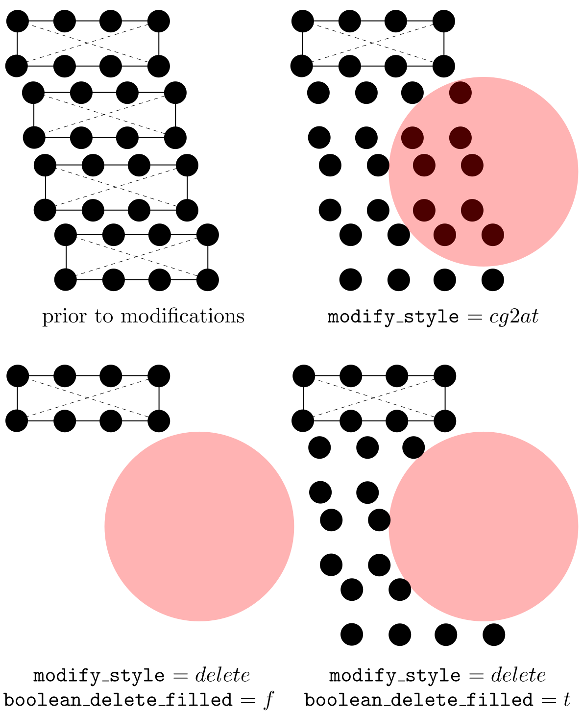

modify
Syntax
modify modify_name modify_style modify_shape
x lower_b upper_b i j k
y lower_b upper_b i j k
z lower_b upper_b i j k
boolean_in boolean_delete_filled modify_axis
modify_centroid_x modify_centroid_y modify_centroid_z
modify_radius_large modify_radius_small
modify modify_name modify_style line_axis plane_axis
modify_centroid_x modify_centroid_y modify_centroid_z
dis_angle poisson_ratio
modify modify_name modify_style depth tolerance
modify modify_name modify_style disp_x disp_y disp_z
-
modify_name= a string (length <= 30) -
modify_style= delete or cg2at or dislocation or cutoff or add_atom -
modify_shape= block or cylinder or cone or tube or sphere -
lower_b,upper_b= real number or inf -
i,j,k= real number -
boolean_in,boolean_delete_filled= t or ft is true f is false -
modify_axis,line_axis,plane_axis= 1 or 2 or 3 -
modify_centroid_x,modify_centroid_y,modify_centroid_z,dis_angle,poisson_ratio,add_x,add_y,add_z= real number -
modify_radius_large,modify_radius_small,depth,tolerance= positive real number
Examples
modify del_sth delete cylinder x 0. 1. 0.94281 0. -0.33333 y inf inf 0. 1. 0. z inf inf 0. 0. 1. t t 3 50. 50. 1. 2. 5.
modify refine_sth cg2at block x inf inf 1. 0. 0. y 1. 12. 0. 0.94281 -0.33333 z inf inf 0. 0. 1. t f 1 20. 4. 5. 17. 13.
modify create_dis dislocation 1 3 1. 20. 3.2 60. 0.36
modify use_cutoff cutoff 0.1 0.01
modify add_some_atoms add_atom 1. 3. 2.
Description
This command sets the modifications made to the elements/nodes/atoms that are built from scratch, i.e., when boolean_restart = f. The first syntax is similar to that of the group command.
There are currently five modify_style: delete, cg2at, dislocation, cutoff, and add_atom. When modify_style = delete or cg2at, the first syntax is used; when modify_style = dislocation, the second syntax is used; when modify_style = cutoff, the third syntax is used; otherwise, the fourth syntax is used.
First syntax (modify_style = delete or cg2at)
The first syntax removes some elements/atoms (delete) or refines some elements into atomic scale (cg2at), based on the simulation cell built from scratch.
There are five modify_shape: block, cylinder, cone, tube, and sphere.
lower_b and upper_b are the lower and upper boundaries of the modify_shape, respectively, in units of the component of the lattice periodicity length vector \vec{l'}_0 along the corresponding direction. When lower_b or upper_b = inf, the corresponding lower or upper simulation cell boundaries are taken as the modify_shape boundaries, respectively. Note that when modify_shape = cylinder or cone or tube, lower_b and upper_b are the lower and upper plane boundaries normal to the central axis modify_axis direction, respectively.
i, j, and k decide the modify_shape (\neq sphere) boundary plane orientations with respect to the simulation cell, similar to those in the box_dir command.
Note that these five options (lower_b, upper_b, i, j, and k) are irrelevant when modify_shape = sphere, and when modify_shape = cylinder or cone or tube if the corresponding direction is not modify_axis. Also, modify_axis is irrelevant when modify_shape = block or sphere. However, they need to be provided regardless.
When boolean_in = t, elements with any of their parts (in the coarse-grained domain) and atoms (in the atomistic domain) inside the modify_shape are deleted (delete) or refined to atomic scale (cg2at); otherwise, those outside are. In the coarse-grained domain, an element might have some part of it inside and the remaining part outside modify_shape; for this element, with delete, the region that is left behind due to the deletion may not have the shape specified by modify_shape. In this case, if boolean_delete_filled = t, atoms (that are linearly interpolated from the original element) will be filled in to maintain the modify_shape. E.g., if boolean_in = t, the interpolated atoms of the deleted elements that are outside modify_shape are filled in; otherwise, those inside are, as shown in the figure below. Note that boolean_delete_filled is irrelevant when modify_style = cg2at.

Also note that while delete applies to both atomistic and coarse-grained domains, cg2at applied to the coarse-grained domain only. Different from the group command in which the user should pay attention to the difference between element and node, a modification follows one simple rule in the coarse-grained domain: an element and all its nodes are selected if any interpolated atom of this element is inside (if boolean_in = t) or outside (if boolean_in = f) modify_shape.
modify_centroid_x, modify_centroid_y, and modify_centroid_z, in units of the component of the lattice periodicity length vector \vec{l'}_0 and with respect to the lower boundaries of the simulation cell along the corresponding direction, are the coordinates of the center of the base plane of a cylinder or cone or tube, or the center of a sphere. When modify_shape = cylinder or cone or tube, the modify_centroid_* that corresponds to the modify_axis becomes irrelevant. For example, when modify_axis = 3, modify_centroid_z can take any real number without affecting the results.
modify_radius_large is the base radius of a cylinder, the large base radius of a cone, the outer base radius of a tube, or the radius of a sphere. modify_radius_small, the small base radius of a cone or the inner base radius of a tube, is irrelevant for other modify_shape. Both modify_radius_large and modify_radius_small are in units of the maximum lattice periodicity length l'_\mathrm{max}.
Note that these six options (modify_axis, modify_centroid_*, and modify_radius_*) are not relevant when modify_shape = block. Yet, they need to be provided regardless.
Second syntax (modify_style = dislocation)
The second syntax builds a full dislocation into the simulation cell, with nodes/atoms displaced following the isotropic displacement field. In FCC and BCC lattices, a full dislocation has a Burgers vector magnitude of (\sqrt{2}/2)a_0 and (\sqrt{3}/2)a_0, respectively, where a_0 is the lattice_constant. Multiple modify commands with modify_style = dislocation can be employed to introduce multiple dislocations.
line_axis and plane_axis are the dislocation line axis and the plane normal axis, respectively. They cannot be the same.
modify_centroid_x, modify_centroid_y, and modify_centroid_z, in units of the component of the lattice periodicity length vector \vec{l'}_0 and with respect to the lower boundaries of the simulation cell along the corresponding direction, are the coordinates of the origin with respect to which the displacement field is built. For example, if one wants to build a dislocation passing through the centroid of the simulation cell, these three quantities should be at the centroid. Note that in the coarse-grained and atomistic domains, the slip plane, which contains the dislocation along line_axis and has a normal direction plane_axis, should be located between two adjacent elements and two atomic layers, respectively.
dis_angle and poisson_ratio are the dislcoation character angle (in degrees) and the isotropic Poisson's ratio of the material, respectively.
Third syntax (modify_style = cutoff)
The third syntax deletes one atom from a pair of atoms (either real atoms in the atomistic domain or interpolated atoms in the coarse-grained domain) when they are too close, at the grain boundary. The situation that some atoms are too close to each other is usually a result of the overlap or grain origin displacements. Among all modify commands, there should be no more than one with modify_style = cutoff.
depth and tolerance, in units of the component of the lattice periodicity length vector \vec{l'}_0 along the grain stack direction, specify the size of the target region and the cutoff distance, respectively, as shown in the figure below. In most cases, tolerance should not be larger than or equal to the first nearest neighbor distance in a perfect lattice.
At each grain boundary, a check is first conducted, within the region set by depth along the grain stack direction, on both the real atoms in the atomistic domain or the interpolated atoms in the coarse-grained doain. In the figure above, (i) all atoms in the red shaded region (grain I) will be run against those in the left green shaded region (grain II), (ii) all atoms in the right green shaded region (grain II) will be run against those in the blue shaded region (grain III). Within a pair, if both are real atoms, the one associated with a smaller grain_id is deleted; if one is a real atom and the other is an interpolated atom, the real atom is deleted; if both are interpolated atoms, the user will get an error message because it is impossible to delete a single interpolated atom from an element, which would violate the hyperelastic body assumption of an element.
Fourth syntax (modify_style = add_atom)
The fourth syntax adds additional atoms to the simulation cell built from scratch. It cannot add additional elements. The information of the atoms to be added is read from LAMMPS data files lmp_*.dat, where * is the id of the current modify command in cac.in. For example, if the commands look like this:
modify del_sth delete cylinder x 0. 1. 0.94281 0. -0.33333 y inf inf 0. 1. 0. z inf inf 0. 0. 1. t t 3 50. 50. 1. 2. 5.
modify add_first add_atom 1. 3. 2.
modify create_dis dislocation 1 3 1. 20. 3.2 60. 0.36
modify add_second add_atom -1. 4. 2.
then two files, naming, lmp_2.dat and lmp_4.dat should be provided.
disp_x, disp_y, and disp_z, in units of the component of the lattice periodicity length vector \vec{l'}_0 and with respect to the lower boundaries of the simulation cell along the corresponding direction, are the displacement of the added atoms with respect to their original positions in lmp_*.dat. If disp_x, disp_y, and disp_z are all zero, the atoms are added as is.
This modify_style can be useful in constructing models containing grain boundaries (GBs). For example, the GB region (which may not have energy minimized GB structures) of a bicrystal model may be deleted first, before the energy minimized GB structures presented in LAMMPS data files are added to the model. This can be realized by first using a modify command with modify_style = delete, followed by another modify command with modify_style = add_atom.
Related commands
There cannot be fewer modify commands than modify_number. When there are too many modify commands in cac.in, those appearing later will be ignored.
This command becomes irrelevant when boolean_restart = t or modify_number = 0, in which case there is no need for the modification information.
Related files
model_modify.f90, model_modify_interpo.f90, model_add_atom.f90, model_cutoff.f90, model_cutoff_bd.f90, model_dislocation.f90, model_cg2at.f90, model_delete.f90, and model_rearrange.f90.
Default
None.
Acknowledgements
Rigelesaiyin Ji and Jaber R. Mianroodi are acknowledged for helpful discussions in implementing the second syntax.